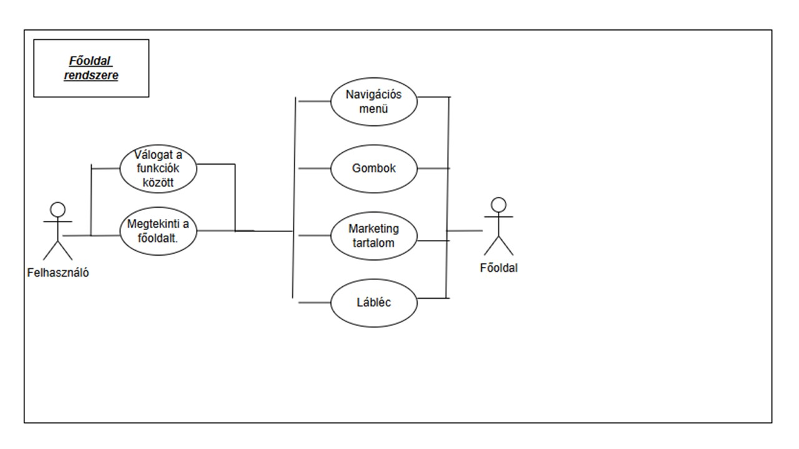
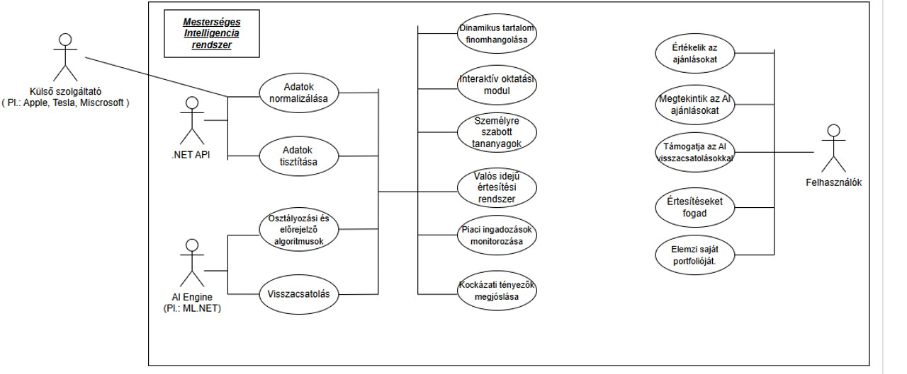
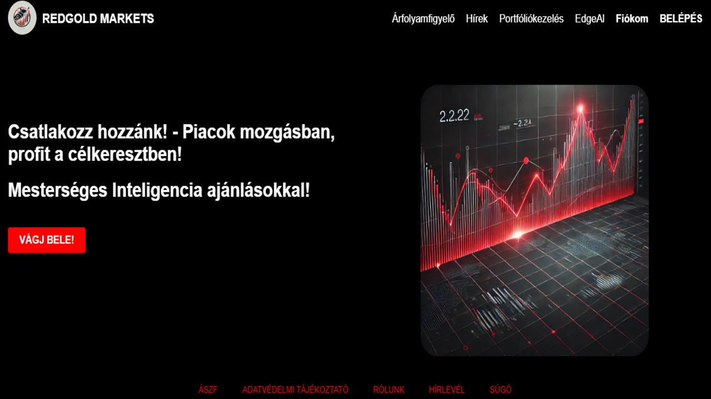

| Dátum | Verzió | Leírás | Szerző |
| 2025.03.24. | 1.0 | Dokumentum létrehozása, fejezetek felosztása egymás között. | Orosz Kristóf Radvánszky Ádám János |
| 2025.03.28. | 1.1 | A 2. (Áttekintés), a 7. (Támogatottság), 8. (Tervezési korlátozások), 11. (Interfészek) fejezeteinek, és alfejezeteinek kidolgozása. | Orosz Kristóf |
| 2025.03.29. | 1.2 | A 11.1 (Felhasználói interfészek) alfejezethez az első kezdetleges prototípus elkészítése a webalkalmazás főoldaláról. | Orosz Kristóf Radvánszky Ádám János |
| 2025.03.30 | 1.3 | Megbízhatóság(5.), Teljesítmény(6.), On-line dokumentáció és Help rendszer(9.), Felhasznált kész komponensek(10.), fejezetek kidolgozása | Radvánszky Ádám János |
| 2025.03.31. | 1.4 | A 4. (Használhatóság) és a 13. (Mellékletek) fejezeteinek és alfejezeteinek kidolgozása. | Orosz Kristóf |
| 2025.04.01. | 1.5 | A 12.fejezet(Alkalmazott szabványok) és alfejezetinek kidolgozása. | Radvánszky Ádám János |
| 2025.04.03. | 1.6 | A 3.fejezet(A rendszer funkciói) és alfejezetinek kidolgozása. | Radvánszky Ádám János |
| 2025.04.05. | 1.7 | Dokumentum átnézése, hibák kijavítása. | Orosz Kristóf |
| 2025.04.07. | 1.8 | A 3.1 (Árfolyamfigyelő) alfejezet bővítése funkciókkal, és a hozzá tartozó Use Case diagramm elkészítése. | Orosz Kristóf |
| 2025.04.08. | 1.9 | A 3.0 (Főoldal funkciói), a 3.2 (Portfoliókezelő) és 3.3 (Mesterséges Intelligencia) alfejezeteinek bővítése funkciókkal, és a hozzá tartozó Use Case diagramm elkészítése. | Orosz Kristóf |
Ez a webalkalmazás egy modern, interaktív platform lesz, amely a pénzügyi piacok világába
vezeti be a felhasználókat valós idejű adatok, átfogó elemzési lehetőségek és intelligens
befektetési ajánlások segítségével. Célunk, hogy a felhasználók számára egyszerre biztosítsunk
pontos, naprakész információkat és egy kockázatmentes, oktató jellegű környezetet,
amelyben tesztelhetik befektetési döntéseiket.
A webalkalmazásunk elsődleges célja lesz, hogy valós idejű adatokat szolgáltasson a
részvényárfolyamokról, indexekről és más pénzügyi eszközökről. Ennek révén a
felhasználók gyorsan reagálhatnak a piaci változásokra, így tájékozottabb döntéseket
hozhatnak a befektetéseik során. Az alkalmazás lehetőséget fog nyújtani abban is, hogy a
felhasználók kockázatmentesen gyakorolják befektetési stratégiáikat.
A rendszerünk számos menüponttal fog rendelkezni.
A portfóliókezelés menüpontban a felhasználók majd nyomon fogják tudni követni és elemezni saját
befektetési portfóliójukat, így láthatják a hozamok és kockázatok alakulását, és
ennek fényében optimalizálhatják stratégiáikat.
A tervek szerint az interaktív befektetési szimulátor lehetőséget biztosít majd a rövid és
hosszú távú kereskedési stratégiák kockázatmentes kipróbálására, valós adatok felhasználásával.
Emellett a tőzsdei hírek szekció folyamatosan naprakész információkat fog szolgáltatni a
legfontosabb gazdasági és piaci eseményekről.
A mesterséges intelligencia ajánlások funkció modern AI-algoritmusok bevonásával fogja elemezni a piaci adatokat,
így személyre szabott befektetési ötleteket nyújt
majd a felhasználónak.
A tervek között szerepel a biztonságos felhasználói regisztráció és bejelentkezés funkció,
amelynek célja a személyre szabott élmény és a fokozott adatvédelem biztosítása,
továbbá a hírlevél feliratkozásnak köszönhetően a felhasználók mindig értesülnek majd a
legújabb piaci trendekről és hírekről.
A webalkalmazásunk kialakításánál kiemelt figyelmet fordítunk a felhasználói élményre.
Az átlátható felületek segítségével a pénzügyi piacokat kevésbé ismert felhasználók is könnyedén eligazodhatnak a rendszerben.
A projekt fejlesztése során alkalmazni kívánt modern technológiai megoldások biztosítják,
hogy az alkalmazás mindig a legfrissebb adatokat és elemzési lehetőségeket kínálja.
A modern felhőalapú architektúránk lehetővé fogja tenni, hogy az alkalmazás rugalmasan skálázható legyen,
így a felhasználói bázis növekedésével párhuzamosan megőrizze a magas teljesítményt és gyors adatfeldolgozást.
Az oldal központi üzenete az lesz, hogy
„Csatlakozz hozzánk! - Piacok mozgásban, profit a célkeresztben!”
amely szöveg esetlegesen motiválhatja az érdeklődőket, hogy belevágjanak a befektetési világ felfedezésébe.
Kiemelést kap a mesterséges intelligencia is jelezve, hogy a platformon a legkorszerűbb
technológiák is megtalálhatóak.
A felső menüsorban olyan
fontos funkciók szerepelnek majd, mint az Árfolyamfigyelő, ahol valós időben követhetők a
részvények, devizák és más pénzügyi eszközök ármozgásai, valamint a Hírek,
amelyek naprakész információkkal és elemzésekkel támogatják a befektetői döntéshozatalt.
A Portfóliókezelés menüpont alatt a felhasználók saját befektetéseiket,
hozamaikat és a vagyoni összetételt tekinthetik át egyértelműen megjelenített grafikonok és
adatok segítségével. Ugyanilyen fontos szerepet kap az Edge AI, amely mesterséges
intelligenciával támogatott piaci elemzéseket és előrejelzéseket nyújt,
ezáltal hatékonyabban segít felmérni a kockázatokat és az esetleges nyereségi lehetőségeket.
A jobb felső sarokban látható Fiókom és Belépés gombok a személyre szabott
felhasználói élmény elérését teszik majd lehetővé, ezen keresztül ugyanis a regisztrált tagok
biztonságosan kezelhetik adataikat és portfóliójukat.
A képernyő alján a felhasználók megtalálhatják majd az ÁSZF, az Adatvédelmi Tájékoztató,
a Rólunk és a Hírlevél funkciókat, amelyek további gyakorlati és jogi
információkat kínálnak.
A szabályozottság kiemelten fontos a pénzügyi rendszerekben,
ezért az ÁSZF és az Adatvédelemi Tájékoztató részleteinek megismerése elengedhetetlen mindazoknak,
akik tényleges tranzakciókat kívánnak végrehajtani.
A Rólunk menüpont alatt a fejlesztés háttere és a csapat bemutatása kap helyet,
míg a Hírlevél opció hozzájárul, hogy a felhasználók rendszeresen értesüljenek a
legfrissebb piaci elemzésekről és újdonságokról.
A modern dizájn és az erőteljes, piros kiemelések hatására egy izgalmas,
mégis komoly légkör teremtődik, ahol a piac mozgásának követése, valamint a
mesterséges intelligencia ajánlásai éppúgy előtérbe kerülnek, mint a jogi és adatvédelmi keretek.
A hosszú távú célunk egy stabil, könnyen kezelhető és mégis innovatív tőzsdei felület létrehozása,
ahol a piacokat követő befektetők valóban otthon érezhetik magukat.
Az alkalmazás fejlesztése során több technológiai, jogi és üzleti korlátozást is figyelembe
kell venni. Az egyik legfontosabb korlátozó tényező a jogszabályi megfelelés,
mivel a platformnak a Magyar Nemzeti Bank (MNB),
valamint más pénzügyi hatóságok előírásait teljesítenie kell.
Ez különösen az ügyfélazonosítási, pénzmosás elleni és adatvédelmi
szabályozásokat érinti.
A mesterséges intelligencia-alapú ajánlások és a befektetési szimulátor használata során az
adatvédelmi szabályok szigorúan meghatározzák, milyen személyes adatokat
lehet gyűjteni és kezelni.
A platformon megjelenő tőzsdei adatok és hírek külső szolgáltatóktól származnak,
így azok licencfeltételei és szerződései is behatárolják a tartalmak felhasználását
és frissítési gyakoriságát. Technológiai szempontból a rendszernek képesnek kell lennie a
hirtelen megnövekedett felhasználói terhelés kezelésére,
ami infrastruktúra-korlátokat is jelent, például az árfolyamadatok gyors frissítésénél.
A befektetési szimulátor és portfóliókezelés kialakításánál
figyelembe kell venni, hogy a felhasználók eltérő pénzügyi tudással rendelkeznek,
ezért a rendszer korlátozottan ajánlhat bonyolult vagy magas kockázatú pénzügyi termékeket.
Az integrációs korlátok miatt a platformnak technológiai, biztonsági és kompatibilitási
szempontból is igazodnia kell a banki, fizetési és egyéb külső szolgáltatók követelményeihez.
A felhasználói felület egyszerűségére és áttekinthetőségére való törekvés is egyfajta
korlátozást jelent, mert nem lehet korlátlan számú összetett funkciót megjeleníteni.
A tőzsdei webalkalmazásunk egy sokoldalú, felhasználóbarát platformot kínál, amely a pénzügyi tanulást, a gyakorlati tapasztalatot és a közösségi interakciót
ötvözi, hogy az általános felhasználók – kezdő befektetők vagy érdeklődők – számára könnyen hozzáférhető legyen a tőzsdei világ. A rendszer egyik
kulcsfunkciója a szimulált kereskedési környezet, amely lehetővé teszi a felhasználók számára, hogy virtuális pénzzel gyakorolják a részvények adás-vételét
valós idejű piaci adatok alapján, így kockázat nélkül tanulhatják meg a kereskedés alapjait és tesztelhetik stratégiáikat. Az interaktív adatvizualizációs
eszközök – például testreszabható grafikonok és táblázatok – segítik a piaci trendek elemzését, lehetővé téve a felhasználók számára, hogy könnyen megértsék
az árfolyamváltozásokat, például egy részvény esetleges heti ingadozásait.
A közösségi interakciók támogatása érdekében a rendszer egy belső fórumot biztosít, ahol a felhasználók megoszthatják tapasztalataikat, stratégiáikat,
és kérdéseket tehetnek fel egymásnak, így egy támogató közösséget építve. Az oktatási tartalmak – cikkek, videók és kvízek formájában – a tőzsdei alapok
megértését szolgálják, például a hozam fogalmának magyarázatával vagy a piaci trendek elemzésével, játékos formában segítve a tanulást. A rendszer
testreszabhatósága lehetővé teszi a felhasználók számára, hogy a felületet saját igényeikhez igazítsák, például a grafikonok színeit vagy az értesítések
típusát beállítva, és többnyelvű támogatással (pl. magyar, angol) így a nemzetközi közönség számára is elérhető lesz. Végül, a gyors keresési funkció
intelligens szűrésekkel – például szektor vagy piaci kapitalizáció szerinti rendezéssel – biztosítja, hogy a felhasználók gyorsan megtalálják a releváns
információkat, például egy adott részvény adatait. Összességében a rendszer funkciói egy modern, tanulást és gyakorlati tapasztalatot ötvöző platformot
alkotnak, amely a felhasználók pénzügyi tudatosságát és önbizalmát növeli.

Az Árfolyamfigyelő funkció a tőzsdei webalkalmazás egyik alapvető
modulja, melynek célja, hogy a felhasználók számára valós idejű piaci adatokat
biztosítson egy átlátható, egyszerű felületen. A funkció megvalósítása során a
piaci adatok egy jól strukturált, táblázatos nézetben kerülnek megjelenítésre,
amelyben szerepelnek a legnépszerűbb részvények – például az Apple Inc. (AAPL),
Tesla Inc. (TSLA), Microsoft Corp. (MSFT), Amazon Inc. (AMZN) és az Alphabet Inc. (GOOGL)
– adatai. A táblázat oszlopai tartalmazzák a részvény nevét, az aktuális árfolyamot HUF-ban,
a napi árfolyamváltozás százalékos értékét, valamint a kereskedési lehetőségeket, amelyek
segítik a felhasználót a gyors döntéshozatalban és a piac folyamatos monitorozásában.
Minden egyes táblázatsorból a felhasználó interakcióba
léphet az alapvető tranzakciós funkciók segítségével, amelyek között
szerepel a Vásárlás és az Eladás gomb. A Vásárlás gomb, amely egyértelműen
zöld színnel jelenik meg, a részvény vételi tranzakciójának elindítását
szolgálja, míg az Eladás gomb piros megjelenésével hívja fel a figyelmet a
részvény eladására vonatkozó műveletre. Ezek a funkciók közvetlenül integrálva
vannak az adatmegjelenítési felületbe, így a felhasználók azonnali és zavartalan
tranzakciókat hajthatnak végre.
A tranzakciós funkciók mellett a rendszer három további, kiegészítő funkciót
is tartalmaz, amelyek célja a felhasználói élmény javítása és a részletes piaci elemzés
támogatása. Az első kiegészítő funkció a Grafikon megjelenítése. Ennek a funkciónak
minden táblázatsorban egy dedikált gombja van, amely megnyomva egy modális ablakot nyit meg.
Ebben az ablakban a felhasználó részletes árfolyamgrafikont lát, amelyen az adott részvény
múltbeli és aktuális ármozgása jelenik meg, beleértve a technikai indikátorok, például
mozgóátlagok alkalmazását is. A grafikon lehetővé teszi a felhasználó számára, hogy
mélyebb piaci elemzést végezzen és azonosítsa a trendeket.
A második kiegészítő funkció az Értesítés beállítása, amely lehetővé teszi,
hogy a felhasználók személyre szabott árfolyamriasztásokat állítsanak be. Ehhez minden
táblázatsorban található egy gomb, amely aktivál egy modális űrlapot, ahol a felhasználó
megadhatja a minimális és maximális árküszöböket az adott részvényre vonatkozóan. Amennyiben
a piaci ár eléri vagy meghaladja ezeket az előre beállított küszöböket, a rendszer
automatikusan riasztást küld a felhasználónak, így biztosítva, hogy semmilyen fontos
piaci változás ne kerüljön figyelmen kívül.
A harmadik kiegészítő funkció a Részletes adatok megtekintése, amely részletes
piaci információk elérését teszi lehetővé az adott részvényről. Ennek a funkciónak a
gombja navigációt biztosít egy külön dedikált oldalra vagy egy modális ablakra, ahol
a felhasználó olyan adatokhoz jut, mint a napi kereskedési forgalom, az éves osztalék,
a piaci kapitalizáció és egyéb releváns statisztikák. Ez a funkció célzottan támogatja
a mélyebb analitikai igényeket, lehetővé téve a felhasználók számára, hogy komplex
információk alapján hozzanak meg döntéseket a kereskedési stratégiájukról.
A portfóliókezelés funkció a tőzsdei webalkalmazás egyik alapvető modulját képezi,
amely lehetővé teszi a felhasználók számára, hogy szimulált befektetéseiket átláthatóan
nyomon kövessék és kezeljék. A rendszer két fő részre épül: az első rész a portfólió
összetételét vizuálisan megjelenítő dinamikus, narancssárga kördiagram, míg a második
rész a befektetési jegyek listája. A kördiagram a felhasználó által kiválasztott eszközök
eloszlását mutatja, és folyamatosan frissül, amikor új részvények – például Tesla, Microsoft
vagy más cégek – kerülnek hozzáadásra, vagy meglévő pozíciók módosulnak. Ez a vizuális
ábra segíti a felhasználót abban, hogy egyszerűen megértse portfóliója diverzifikációját és
aktuális állapotát. A befektetési jegyek listája részletesen tartalmazza az egyes befektetések
nevét, mennyiségét, aktuális árfolyamát és értékét, így lehetővé téve a portfólió gyors
áttekintését és szükség szerinti módosítását, mint például új pozíciók nyitását vagy meglévők
eladását.
A rendszer jövőbeni fejlesztései során részletes statisztikák és elemzések is
elérhetővé válnak, amelyek lehetővé teszik a felhasználók számára, hogy még
átfogóbban megértsék befektetéseik teljesítményét, és ennek megfelelően optimalizálják
stratégiájukat. Emellett három új, fejlett funkcióval bővül a portfóliókezelő modul,
melyek közül az első az automatikus portfólió kiegyensúlyozás modulja. Ebben a funkcióban a
felhasználó számára lehetőség nyílik arra, hogy előre definiálja a portfólióban kívánt
eszközarányokat (például 30% részvény, 40% kötvény, 30% készpénz), majd a rendszer
folyamatosan figyelemmel kíséri a portfólió aktuális összetételét. Amennyiben az aktuális
eloszlás eltér a célarányoktól – például a részvények súlya 40%-ra emelkedik – a modul
automatikusan elemzi az egyes eszközök likviditását, árfolyamát és a tranzakciós költségeket,
majd intelligens javaslatokat tesz a kiegyensúlyozás érdekében. Ezek a javaslatok
tartalmazhatják a szükséges részvények eladását vagy újbóli vásárlását, továbbá a
rendszer figyelmeztet a tranzakciós díjakra és egyéb releváns költségekre, így a
felhasználó a lehető legoptimálisabb döntést hozhatja meg a portfólió állapotának
korrigálása érdekében. A modul emellett támogatja a manuális beavatkozást, lehetővé
téve, hogy a felhasználó az automatikus javaslatok alkalmazása előtt részletesen
megvizsgálja a rendszer által ajánlott lépéseket.
A második új funkció a tranzakciós napló modulja, amely részletesen rögzíti a
felhasználó által végrehajtott összes vásárlási és eladási műveletet a rendszerben.
Minden egyes tranzakcióhoz hozzárendelésre kerül egy egyedi azonosító, amely tartalmazza
a művelet pontos időbélyegét, az érintett eszköz szimbólumát, az aktuális árfolyamot, a
tranzakció volumenét, valamint a kapcsolódó díjakat és költségeket. A napló adattárolása
relációs adatbázisban történik, biztosítva ezzel az adatok strukturált és auditálható
kezelését. A felhasználó számára egy intuitív felületet biztosítunk, amely lehetővé
teszi a tranzakciók dátum, eszköztípus vagy tranzakciós típus szerinti szűrését és
rendezését, így könnyedén visszakereshető a befektetéseinek története. Továbbá a rendszer
támogatja az adatok exportálását különböző formátumokba (például CSV vagy JSON), lehetőséget
biztosítva a felhasználóknak, hogy a tranzakciós előzményeket külső elemzési eszközök
segítségével tovább dolgozzák fel.
A harmadik új funkció a személyre szabható értesítési rendszer, amely a
kritikus portfólióváltozásokról és fontos piaci eseményekről való azonnali tájékoztatás
célját szolgálja. A felhasználók a rendszer felületén egyéni értesítési szabályokat
állíthatnak be, amelyeken keresztül meghatározhatják, hogy mely események
(például egy adott részvény árfolyamának 5%-os csökkenése vagy emelkedése, a portfólió
teljes értékének 10%-os elmozdulása, illetve releváns piaci hírek megjelenése) váltják
ki az értesítési folyamatot. Az értesítéseket többféle csatornán – például e-mail,
push értesítés, vagy akár SMS – érheti el a felhasználó, attól függően, hogy milyen
kommunikációs beállításokat választott. A rendszer háttérben folyamatosan monitorozza a
portfólió és a kapcsolódó piaci adatok változását, és a beállított kritériumok teljesülése
esetén azonnal értesíti a felhasználót, biztosítva ezzel, hogy minden fontos változásról
valós időben tájékoztatást kapjon. Emellett az értesítési modul időzített ellenőrzési
mechanizmussal is rendelkezik, így akár percenként frissítve a rendszer a releváns
adatokat, ezzel minimalizálva a késésekből adódó információvesztést.
A Kockázatelemző modul célja, hogy a felhasználók számára átláthatóvá tegye
portfóliójuk kockázati szintjét. A rendszer a valós idejű piaci adatok és a portfólió
összetételének figyelembevételével különböző kockázati mutatókat számol, például a
volatilitást, a várható veszteséget (Value at Risk, VaR) és az egyes eszközök kockázati
hozzájárulását. A modul interaktív grafikonokat és statisztikákat biztosít, melyek
segítségével a felhasználók megtekinthetik a kockázati mutatókat historikus adatok tükrében,
illetve jövőbeni szcenáriók alapján előrejelzéseket kaphatnak a potenciális veszteségekről.
Emellett a modul ajánlásokat fogalmaz meg arra vonatkozóan, hogy miként lehet optimalizálni
a portfóliót a kockázatok csökkentése érdekében.

Elsőként az AI-alapú Interaktív Oktatási Modul és Elemző Eszközt vezetjük be,
amely a rendszer mögötti bonyolult adatfeldolgozó algoritmus működését és a piaci trendek alakulását illusztrálja. A modul nemcsak statikus tartalmakat kínál, hanem a mesterséges intelligencia segítségével személyre szabott tananyagokat jelenít meg, melyek interaktív videókon, lépésről-lépésre útmutatókon és esettanulmányokon keresztül segítik a felhasználót a tőzsdei alapfogalmak, kockázatértékelés és prediktív elemzések megértésében. Az MI dinamikusan elemzi a felhasználói interakciókat, és ennek megfelelően finomhangolja a bemutatott tartalmakat, így lehetővé téve, hogy a tananyagok a felhasználók egyedi igényeire szabottak legyenek.
Majd egy MI-val támogatott Valós Idejű Értesítési
Rendszert alakítunk ki, amely az aktuális piaci ingadozásokat és globális
gazdasági eseményeket figyeli. E rendszer során a mesterséges intelligencia folyamatosan
elemzi a piaci adatokat, a hírszolgáltatásokat és egyéb releváns forrásokat, hogy azonnal
felismerje a kritikus változásokat, például egy technológiai vállalat új termékbejelentését.
Az értesítési rendszer így push üzenetekben vagy e-mail riasztásokban közli a felhasználóval
az aktuális befektetési kockázatok és lehetőségek változását, a felhasználók által előre
beállított paraméterek alapján, amelyeket az MI személyre szabott elemzése révén folyamatosan
aktualizál.
További komponensként az MI-vezérelt Szimulált Portfólió Analitikai és
Diverzifikációs Asszisztens funkcióját építjük be, amelynek célja a
felhasználók portfóliójának részletes elemzése és optimalizálása. Ebben a
rendszerben a mesterséges intelligencia olyan grafikonokat, statisztikákat és
korrelációs elemzéseket generál, amelyek révén a felhasználó könnyen átláthatja
portfóliójának teljesítményét, és azonosíthatja a túlzott koncentrációkat egy-egy szektorban.
Az MI ezen felül "mit-venne, ha" szimulációkat is képes futtatni, amelyek alapján a rendszer
prediktív javaslatokat kínál a portfólió diverzifikációjának javítására, így a felhasználók
a kockázatokat csökkentve, a befektetési stratégiáikat dinamikusan alakíthatják.
Negyedik fejlesztési elemként egy Visszajelzés Alapú Adaptív Tanulási Mechanizmust
integrálunk, amely a rendszer folyamatos fejlesztését és személyre szabását szolgálja.
Itt a felhasználói visszajelzéseket – például az egyes ajánlások sikerességét értékelő
visszajelző felületen keresztül – a mesterséges intelligencia elemzi, majd az eredmények
alapján módosítja az ajánlási algoritmust. Ez az adaptív tanulási folyamat lehetővé teszi,
hogy a rendszer a folyamatos felhasználói interakciók és tapasztalatok tükrében finomítsa
a javaslatokat, biztosítva ezzel, hogy a rendszer a piaci trendek változásait és a felhasználók
egyéni kockázati profilját is figyelembe vegye.
A fent ismertetett funkciók teljesítményének és integrációjának alapját maga a mesterséges
intelligencia építi, amely több rétegből áll. Az adatgyűjtési réteg számos külső API-t
(például valós idejű piaci adatok és globális gazdasági hírek szolgáltatói API-kat) integrál,
így biztosítva, hogy a rendszer mindig naprakész információk birtokában legyen.
Az adat-előkészítést a .NET API segítségével végezzük, amely normalizálja, tisztítja
és előfeldolgozza a felhasználók korábbi szimulált tranzakcióit és a releváns piaci adatokat.
Az előkészített adatok alapján a modellépítési réteg, melynek fejlesztése során a Microsoft
ML.NET keretrendszert és egyéb gépi tanulási könyvtárakat (például TensorFlow integrációs
lehetőségeit, ha szükséges) alkalmazzuk, regressziós, osztályozási és előrejelző
algoritmusokat implementál. Ezek az algoritmusok képezik a rendszer intelligens magját,
amely a felhasználók befektetési preferenciái, történeti adatai és a valós idejű piaci
trendek alapján generálja a személyre szabott ajánlásokat. Továbbá, a rendszer egy
egyedi visszacsatolási mechanizmussal rendelkezik, amely a felhasználók által adott
értékelések és visszajelzések alapján iteratív módon finomítja a modelleket,
így adaptív módon reagálva a piaci környezet változásaira.

A Fiókkezelés funkció a tőzsdei webalkalmazás egyik alapvető eleme, amely lehetővé teszi a felhasználók számára, hogy személyes adataikat és
fiókbeállításaikat kezeljék. A felület egy egyszerű, átlátható ablakot jelenít meg, amely a felhasználó alapvető adatait – például a nevét és e-mail-címét
– mutatja, így a felhasználók gyorsan ellenőrizhetik, hogy helyesek-e az adataik. Ez a szekció a fiók alapvető információinak áttekintésére szolgál,
és biztosítja, hogy a felhasználók mindig naprakész adatokat lássanak, például ha egy e-mail-cím változott.
A "Rólam" ablak alatt két gomb található: a "Fiók törlése" és a "Jelszó megváltoztatása", amelyek alapvető fiókkezelési műveleteket tesznek lehetővé.
A "Jelszó megváltoztatása" gomb segítségével a felhasználók frissíthetik bejelentkezési jelszavukat, például ha biztonsági okokból erősebb jelszót szeretnének
választani, míg a "Fiók törlése" opció lehetővé teszi a fiók végleges megszüntetését, például ha a felhasználó már nem kívánja használni az alkalmazást.
Ez a funkció biztosítja, hogy a felhasználók teljes kontrollt gyakorolhassanak fiókjuk felett, miközben a .NET API-val készült back-end garantálja az adatok
biztonságos tárolását és kezelését.
A Bejelentkezés és Regisztráció funkció a tőzsdei webalkalmazás alapvető eleme, amely biztosítja, hogy a felhasználók biztonságosan hozzáférjenek a
rendszerhez, és új fiókot hozhassanak létre. A bejelentkezési ablak egy egyszerű felületet kínál, ahol a felhasználók az e-mail-címüket és jelszavukat
adhatják meg, majd a "Belépés" gombra kattintva férhetnek hozzá fiókjukhoz. Az ablak alján található "Nincs fiókja? Ide kattintva regisztrálhat!" link,
valamint az "Elfelejtett jelszó?" opció további lehetőségeket biztosít, például új fiók létrehozását vagy a jelszó visszaállítását, ha a felhasználó
elfelejtette azt.
A regisztrációs ablak is hasonlóan letisztult dizájnnal rendelkezik, és a szükséges adatokat – név, e-mail-cím, jelszó és jelszó megerősítése – kéri be a
felhasználótól. A "Regisztráció" gombra kattintva a felhasználók létrehozhatják fiókjukat, amely lehetővé teszi számukra a szimulált kereskedési környezet
és egyéb funkciók használatát. A .NET API-val készült back-end biztosítja az adatok titkosítását és biztonságos tárolását, így a felhasználók adatai
védettek maradnak.
A Friss tőzsdei hírek és Hírlevél feliratkozás funkció a tőzsdei webalkalmazás fontos eleme, amely a felhasználókat naprakész piaci információkkal látja el,
és lehetőséget biztosít számukra, hogy rendszeres értesítéseket kapjanak. A "Friss tőzsdei hírek" szekció egy dedikált oldalon jelenik meg, ahol a felhasználók
valós idejű híreket olvashatnak a globális piacokról, például egy nagy technológiai vállalat, mint az Apple új termékbejelentéséről, vagy egy gazdasági
esemény, például az amerikai kamatemelés hatásairól. A hírek külső API-k, például a Finnhub segítségével kerülnek integrálásra, és rövid,
könnyen olvasható formátumban jelennek meg, címekkel, rövid összefoglalókkal és a forrás megjelölésével, így a felhasználók gyorsan átláthatják a legfontosabb
eseményeket, amelyek befolyásolhatják szimulált kereskedési döntéseiket.
A Hírlevél feliratkozás funkció lehetővé teszi a felhasználók számára, hogy e-mailben kapjanak napi vagy heti összefoglalókat a legjelentősebb piaci hírekről,
valamint a szimulált portfóliójuk teljesítményéről. A feliratkozás egy egyszerű űrlapon keresztül történik, ahol a felhasználók megadják e-mail-címüket, és
kiválaszthatják, milyen típusú értesítéseket szeretnének kapni, például csak a technológiai szektorra vonatkozó híreket. A hírlevelek személyre szabottak,
és tartalmazhatnak tippeket a kereskedési stratégiák javítására, például egy javaslatot a diverzifikáció növelésére. A .NET API-val készült back-end
biztosítja a feliratkozási adatok biztonságos kezelését, és a felhasználók bármikor leiratkozhatnak a hírlevélről egy link segítségével. Ez a funkció
különösen hasznos azok számára, akik szeretnék folyamatosan követni a piaci fejleményeket, és tanulni a hírek hatásairól anélkül, hogy állandóan az
alkalmazásban kellene böngészniük.
A fejlesztendő tőzsdei alkalmazás sikerének egyik kulcsa a magas szintű használhatóság lesz.
A rendszernek nem csupán funkcionálisan kell majd helytállnia,
hanem a felhasználók számára is könnyen elérhetővé, gyorsan tanulhatóvá és kényelmesen kezelhetővé
fog válni.
Ehhez a legfontosabb információkat az alábbi alfejezetek tartalmazzák.
A tőzsdei webalkalmazás megbízhatósága kulcsfontosságú ahhoz, hogy a felhasználók legyenek, a kezdő befektetők vagy tanulni vágyók – magabiztosan használhassák
az eszközt a pénzügyi döntéseik támogatására. Technikai szempontból az alkalmazás stabil működést biztosít, mivel a fejlesztés során nagy hangsúlyt fektetünk
a szerveroldali infrastruktúra robusztusságára, amely képes kezelni a nagy mennyiségű valós idejű adatot, például árfolyamfrissítéseket vagy híreket. A webapp
99,9%-os rendelkezésre állást céloz, így a felhasználók minimális kieséssel számolhatnak, még csúcsidőszakokban is, például egy jelentős piaci esemény idején.
A rendszeres hibajavítások garantálja, hogy az alkalmazás ne omoljon össze váratlan terhelés alatt, például ha sokan egyszerre használják a szimulációs funkciót.
Az adatbiztonság szintén a megbízhatóság alapvető eleme. A webalkalmazás titkosított kapcsolatot (HTTPS) használ, hogy a felhasználók adatai – például a
szimulált portfóliók vagy a személyes beállítások – védve legyenek a külső támadásokkal szemben. Emellett a rendszer megfelel a modern adatvédelmi előírásoknak is,
például a GDPR-nak, így a felhasználók nyugodtak lehetnek, hogy személyes információik nem kerülnek illetéktelen kezekbe. A külső adatforrások, mint a tőzsdei API-k,
szintén megbízható partnerektől származnak mint például a Finnhub, így az árfolyamok és hírek pontosak és naprakészek. A webapp emellett rendszeres
biztonsági mentéseket készít, hogy egy-egy esetleges technikai hiba esetén a felhasználók adatai ne vesszenek el, és a szimulált kereskedési előzményeik bármikor
visszaállíthatók legyenek. Összességében a tőzsdei webalkalmazás megbízhatósága a stabil működés, a biztonságos adatkezelés és a pontos információk kombinációján
alapul, amely bizalmat ébreszt a felhasználókban.
A tőzsdei webalkalmazás teljesítménye alapvető fontosságú ahhoz, hogy a felhasználók zökkenőmentes és hatékony élményt kapjanak, akár valós idejű adatokat
böngészéséhez, akár szimulált kereskedést végezzenek. Az alkalmazás gyors válaszidőt biztosít: az árfolyamok frissítése és a grafikonok betöltése kevesebb
mint 1 másodpercet vesz igénybe, így a felhasználók azonnal reagálhatnak a piaci változásokra, például egy hirtelen árfolyamzuhanásra. Ez különösen fontos
azok számára, akik a szimuláció során szeretnék gyakorolni a gyors döntéshozatalt, hiszen a valós tőzsdei környezetben is kulcsfontosságú a sebesség. A webapp
mögött álló szerverinfrastruktúra: a felhőalapú megoldás, mint az AWS vagy a Google Cloud lesz, amely lehetővé teszi, hogy az alkalmazás nagy terhelés mellett
is stabilan működjön, akár több ezer felhasználó egyidejű aktivitása esetén is.
A teljesítményt a reszponzív dizájn is növeli, amely biztosítja, hogy az alkalmazás minden eszközön: legyen az asztali gép, tablet vagy mobiltelefon – egyformán
gyorsan és hatékonyan működhessen. A mobilfelhasználók számára optimalizált felület minimális adatforgalmat használ, így gyengébb internetkapcsolat mellett is
gördülékeny marad a használat, például egy utazás közbeni gyors ellenőrzés során. Emellett a webalkalmazás hatékonyan kezeli a nagy adathalmazokat: a történelmi
árfolyamok vagy a szimulált portfóliók elemzése során sem lassul be, mivel az adatfeldolgozás jelentős része a szerveroldalon történik. A felhasználói élmény
szempontjából a teljesítményt az is fokozza, hogy az alkalmazás intuitív navigációt kínál, így a kezdők is gyorsan eligazodhatnak a funkciók között, például egy
új szimuláció indításakor vagy egy részvény adatlapjának megtekintésekor. Összességében a tőzsdei webalkalmazás teljesítménye a sebesség, a skálázhatóság és a
felhasználóbarát működés egyensúlyán alapul, amely biztosítja, hogy a felhasználók bármikor és bárhol hatékonyan használhassák az eszközt.
A fejlesztendő tőzsdei alkalmazás (árfolyamfigyelő, befektetési szimulátor, Edge AI, portfóliókezelő)
több platformon is elérhetővé válik, hogy minél szélesebb felhasználói réteg használhassa azt.
Elsődleges cél a webes támogatás de emellett a mobil eszközökön való optimalizált megjelenés és
működés is kiemelt szerepet kap. Az alkalmazás reszponzív kialakítása biztosítja a megfelelő
felhasználói élményt különböző képernyőméretek esetén is.
Technológiai oldalról támogatást nyújtanak a legelterjedtebb frontend
(HTML, CSS, JavaScript) és backend (Python, Node.js vagy más szerveroldali technológiák)
keretrendszerek. A rendszer alkalmas lesz valós idejű adatok feldolgozására,
amit külső API-kon keresztül történő tőzsdei adatlekérdezés biztosít.
A fejlesztés során nyílt forráskódú könyvtárak és keretrendszerek használata előnyben részesül,
így biztosítható a hosszú távú támogatottság és a közösségi fejlesztésből fakadó folyamatos
frissítések elérhetősége.
A rendszer működése független lesz az operációs rendszertől, így Windows, Linux és Android
platformokon is futtatható. A felhasználói élmény javítása érdekében korszerű, reszponzív
felülettervezés kerül alkalmazásra. A fejlesztés során figyelembe vesszük azokat az eseteket is,
amikor a felhasználónak korlátozott internet-hozzáférése van. A jövőbeni verziókban a felhőalapú
adattárolás és az automatikus frissítés támogatása is tervezett funkcióként szerepel majd.
A webböngészőkben való használat mellett mobilalkalmazásként is tervezzük kiadni a programot,
hogy offline módban is elérhetőek legyenek a felhasználói portfóliók.
A tőzsdeadatok és befektetési hírek integrálásához több külső szolgáltatóval tervezünk
együttműködni, ezzel biztosítva a naprakész tartalmakat. Támogatást tervezünk nyújtani
különböző nyelvi beállításokhoz, így a felület több nyelven is elérhető lesz a nemzetközi
befektetőknek. Az alkalmazás használatához egy könnyen áttekinthető súgórendszert is fejlesztünk,
amely lépésről lépésre vezeti be a felhasználót az egyes funkciók használatába.
Úgy tervezzük, hogy a legnagyobb API-s támogatónk a https://finnhub.io weboldal lesz.
A Finnhub egy olyan pénzügyi adatplatform, amely API-kon keresztül biztosít valós idejű adatokat,
többek között részvényekhez, devizapárokhoz és kriptovalutákhoz. A rendszerből lehetőség van
különféle piacelemzési információk lekérdezésére is, mint például vállalati hírekre,
beszámolókra és piaci mutatókra. Finnhub segítségével automatikusan frissíthetők az
árfolyamok, ami elengedhetetlen a valós idejű döntéstámogató és kereskedési alkalmazások
működéséhez. A platform rugalmas csomagokat kínál, így a kezdőktől a professzionális pénzügyi
szolgáltatókig bárki megtalálhatja a megfelelő előfizetési lehetőséget. Az API lehetővé teszi
különféle időintervallumok szerinti lekérdezések végrehajtását, így a kereskedők, befektetők
és elemzők széles körű adatokhoz férhetnek hozzá a hosszabb távú trendek vizsgálatához.
Azonnali értesítési és webhook funkciókkal is rendelkezik, így a fejlesztők eseményvezérelt
módon reagálhatnak a piaci változásokra vagy hírek megjelenésére. A Hírek és cikkek szintén
lekérhetők a Finnhub rendszeren keresztül, ami kiemelten fontos a tőzsdei alkalmazásunk
szempontjából, hiszen a piaci hangulatot jelentősen befolyásolják az aktuális gazdasági,
vállalati és politikai események. A platform használatával elkerülhető a több forrásból
és protokollból származó adatok összehangolásának terhe, mivel egyetlen integrált
szolgáltatásban elérhető számos különböző adat.
A tőzsdei webalkalmazásunk valós idejű feldolgozása megbízható és
stabil internetkapcsolatot, valamint külső API-khoz való hozzáférést igényel.
Ezek az adatok azonban gyakran licencelt vagy fizetős szolgáltatásokból származnak,
így a költségvetés is korlátozza a fejlesztési lehetőségeket. Vannak ingyenes API-k is,
azonban ott nem minden információt hívhatunk le az adott részvényről. Másik fontos korlátozás,
hogy figyelembe kell venni a Magyar Nemzeti Bank szabályozásait is, amelyek meghatározzák a
pénzügyi alkalmazások fejlesztésének és működtetésének kereteit. Legfontosabb ezek közül
az ügyféladatok megfelelő kezelése, a befektetési tanácsadás tilalmára vagy engedélyköteles
szolgáltatásokra vonatkozóan.
A rendszer fejlesztése során az adatbiztonsági előírások a mesterséges intelligencia
alkalmazásának technikai kihívásai, valamint a felhasználóbarát megjelenítés szintén
befolyásolják a végső megvalósítást. A tervezés során folyamatos egyensúlyt kell tartani
a funkcionalitás, a szabályozói megfelelés és a felhasználói élmény között.
A felhasználói adatokat kizárólag titkosított formában tárolhatjuk és kezelhetjük.
A valós idejű adatok megjelenítése függ a külső szolgáltatók válaszidejétől és elérhetőségétől.
A fejlesztés során nem használhatók olyan modulok, amelyek licencdíjai meghaladják a
költségkeretet. A mesterséges intelligencia alkalmazása csak döntéstámogató célra engedélyezett,
automatikus végrehajtás nem történhet ilyen esetben.
A Magyar Nemzeti Bank iránymutatásai értelmében az applikációban bemutatott modellek és
szimulációk kizárólag tájékoztató jellegűek lehetnek. A használathoz előírt biztonsági
követelmények (pl. kétfaktoros hitelesítés) megnehezíthetik az egyszerűbb felhasználói
élmény kialakítását. A mesterséges intelligencia rendszereket nem lehet minden platformon
egyformán telepíteni, így előfordulhatnak eltérő funkciók különböző eszközökön.
A folyamatos fejlesztés során kiemelt figyelmet kell fordítani a valós idejű adatfeldolgozás
minőségének és stabilitásának fenntartására, különös tekintettel a külső szolgáltatók elérhetőségére.
A rendszer bővíthetősége érdekében moduláris architektúrát alkalmazunk, hogy új funkciók
beépítése esetén is megőrizhető legyen a kód tisztasága és a jogszabályi megfelelés.
Az MNB szabályozások változásait figyelemmel kísérjük, és szükség esetén azonnal alkalmazkodunk,
hogy elkerüljük a működési kockázatokat. A fejlesztők mindvégig nagy hangsúlyt fektetnek a
biztonságra és a felhasználók adatainak védelmére, többek között rendszeres penetrációs tesztek
segítségével. A jövőbeni tervek között szerepel a mobil platformokon futó offline mód bevezetése,
amely megkönnyítheti az adatmegtekintést internetkapcsolat nélkül is.
A tőzsdei webalkalmazás on-line dokumentációja és help rendszere arra szolgál, hogy a felhasználók legyenek azok kezdők vagy haladóbb befektetők, gyorsan és
hatékonyan eligazodjanak az alkalmazás funkciói között, valamint megoldást találjanak esetleges kérdéseikre vagy problémáikra. Az on-line dokumentáció egy
könnyen hozzáférhető, böngészőből megnyitható tudásbázisként működik, amely részletesen bemutatja az alkalmazás minden aspektusát. A dokumentáció strukturált
formában, kategóriákra bontva tartalmazza az információkat, például "Kezdő lépések", "Szimulált kereskedés használata", "Árfolyamok és grafikonok értelmezése"
vagy "Gyakori hibák elhárítása". Minden szekció közérthető nyelvezettel íródott, hogy az átlagos felhasználók számára is érthető lesz, és lépésről lépésre
útmutatókat kínál, például arról, hogyan indítsanak egy új szimulációt, vagy hogyan mentsék el a portfóliójukat. A dokumentáció emellett vizuális elemeket,
például képernyőképeket és rövid videókat is tartalmaz, amelyek még szemléletesebbé teszik a magyarázatokat, például egy grafikon beállításának folyamatát.
A help rendszer az alkalmazás felületébe integrálva érhető el, egy könnyen észrevehető "Segítség" ikon formájában, amely minden oldalon meg fog jelenni. Erre kattintva a
felhasználók egy kereshető súgórendszert érhetnek el, ahol kulcsszavak alapján gyorsan megtalálhatják a válaszokat, például ha nem értik, mit jelent a "volatilitás",
vagy hogyan állítsanak be értesítéseket egy részvény árfolyamváltozásáról. A help rendszer interaktív elemeket is kínál, például egy chatbotot, amely egyszerűbb
kérdésekre azonnal válaszol, például "Hogyan vásárolhatok részvényt a szimulációban?" vagy "Miért nem frissül az árfolyam?". Ha a chatbot nem tudja megoldani a
problémát, a felhasználók egy űrlapon keresztül kapcsolatba léphetnek az ügyfélszolgálattal, amely 24 órán belül válaszol majd. A help rendszer emellett egy GYIK
(Gyakran Ismételt Kérdések) szekciót is tartalmaz, amely a leggyakoribb problémákra adhat gyors megoldásokat, például az elfelejtett jelszó visszaállítására vagy a
lassú betöltési idő okainak elhárítására.
A dokumentáció és a help rendszer együttesen biztosítja, hogy a felhasználók ne érezzék magukat elveszettnek, még akkor sem, ha először használják az alkalmazást.
A rendszer több nyelven – például magyarul és angolul – is elérhető lesz, hogy a nemzetközi közönség számára is kényelmes legyen. A jövőbeni rendszeres frissítésekkel a
dokumentáció naprakész marad, például ha új funkciókat vezetünk be, mint például egy mesterséges intelligencián alapuló elemző eszközt. A help rendszer
visszajelzési lehetőséget is kínál, így a felhasználók javaslatokat tehetnek a dokumentáció bővítésére, például ha egy adott témáról részletesebb magyarázatot
szeretnének-e. Összességében az on-line dokumentáció és help rendszer a tőzsdei webalkalmazás szerves részét képezi, amely a felhasználói élményt javítva segíti a
tanulást és a problémamentes használatot.
A tőzsdei webalkalmazás fejlesztése során számos kész komponenst és külső könyvtárat használunk fel, hogy gyorsítsuk a fejlesztési folyamatot, biztosítsuk a
stabilitást, és magas színvonalú felhasználói élményt nyújtsunk. Az alkalmazás front-end részének kialakításához a React JavaScript könyvtárat alkalmazzuk,
amely lehetővé teszi a dinamikus és reszponzív felhasználói felület létrehozását. A React komponensalapú megközelítése segít abban, hogy az olyan elemek,
mint a valós idejű árfolyamgrafikonok vagy a szimulált portfólió kezelőfelülete, gyorsan betöltődjenek és zökkenőmentesen működjenek különböző eszközökön,
például mobiltelefonokon és asztali gépeken. A vizuális dizájn egységesítésére a Material-UI könyvtárat használjuk, amely modern, letisztult megjelenést
biztosít, például gombok, táblázatok és navigációs elemek formájában, így a felhasználók számára intuitív a kezelőfelület.
A valós idejű tőzsdei adatok integrálásához külső API-kat alkalmazzunk, például a Finnhub API-t, amely megbízható forrásból
biztosítanak árfolyamokat, történelmi adatokat és piaci híreket. Ezek az API-k lehetővé teszik, hogy a felhasználók naprakész információk alapján gyakorolhassák
a kereskedést egy szimulációs környezetben, például valós részvényárfolyamok segítségével. Az API-k integrálásához a front-end oldalon a Axios könyvtárat
használjuk,amely leegyszerűsíti az adatlekérdezéseket, és biztosítja, hogy az adatok gyorsan és biztonságosan érkezzenek a felhasználói felületre. Az
adatvizualizációhoz a Chart.js könyvtárat választottuk, amely interaktív grafikonokat és diagramokat kínál, például vonaldiagramokat az árfolyamok változásának
megjelenítésére, így a felhasználók könnyen elemezhetik a piaci trendeket.
A back-end fejlesztéséhez a .NET Core keretrendszert és C# nyelvet használjuk, amely lehetővé teszi egy skálázható és nagy teljesítményű API létrehozását.
A .NET API (ASP.NET Core) biztosítja a szerveroldali logika kezelését, például a felhasználói kérések feldolgozását, a szimulált kereskedési tranzakciók
kezelését és az API-kból érkező adatok továbbítását a front-end felé. Az adatbázis-kezeléshez a Microsoft SQL Server-t (MSSQL) alkalmazzuk, amely gyors és
megbízható tárolást biztosít a felhasználói adatok, például a szimulált portfóliók vagy a kereskedési előzmények számára. A .NET API és az MSSQL közötti
kapcsolatot egy Entity Framework Core segítségével valósítotjuk meg, amely leegyszerűsíti az adatbázis-műveleteket, például az adatok lekérdezését vagy mentését,
miközben biztosítja a teljesítmény optimalizálását. A biztonság érdekében a JWT (JSON Web Token) autentikációs rendszert integráltuk a .NET API-ba, amely védi a
felhasználói fiókokat, és biztosítja, hogy csak jogosult személyek férjenek hozzá az érzékeny adatokhoz, például a szimulált portfóliókhoz.
A reszponzív dizájn érdekében a Bootstrap CSS keretrendszert is felhasználjuk, amely segít abban, hogy az alkalmazás minden képernyőméreten egységesen és
esztétikusan jelenjen meg, például egy mobiltelefon kisebb kijelzőjén is. A valós idejű frissítésekhez a .NET API-val kompatibilis SignalR könyvtárat integráljuk,
amely lehetővé teszi, hogy az árfolyamok automatikusan frissüljenek anélkül, hogy a felhasználónak újra kellene töltenie az oldalt, így a piaci adatok valós
időben jelennek meg a grafikonokon. Ezek a kész komponensek együttesen biztosítják, hogy a tőzsdei webalkalmazás gyors, biztonságos és felhasználóbarát legyen,
miközben a .NET és C# alapú technológiai stack előnyeit – például a nagy teljesítményt és a robusztusi biztonságot – maximálisan kihasználja. A külső könyvtárak
és API-k használata lehetővé teszi, hogy a fejlesztők a specifikus funkciókra, például a szimulációs logikára vagy az oktatási tartalmakra fókuszáljanak,
ahelyett, hogy minden alapvető elemet a nulláról kellene felépíteniük.
A felhasználói interfészek tervezésénél elsődleges szempont, hogy az alkalmazás mind a kezdő,
mind a tapasztalt tőzsdei kereskedők számára könnyen tanulható és átlátható legyen.
A reszponzív kialakítás biztosítja, hogy a rendszer asztali számítógépen, táblagépen
vagy mobiltelefonon is kényelmesen használható maradjon, így a felhasználók bárhol és
bármikor elérhetik az alkalmazást.
A befektetők
áttekinthetik az aktuális árfolyamokat, az Edge AI által javasolt piaci trendeket és a
portfóliójuk pillanatnyi helyzetét. A dinamikus grafikonok, és
intuitív ikonok segítségével a legfontosabb információk egyből szembetűnnek,
legyen szó emelkedő vagy csökkenő részvényárfolyamokról. Az alkalmazáson belül
helyet kap egy részletes Súgó részleg is, ahol a
felhasználók egyszerű leírásokat olvashatnak a tőzsdei kereskedés alapfogalmairól,
illetve gyakorlati tippeket kapnak a Befektetési szimulátor használatához.
A menüsávban minden funkció jól elkülönül: külön menüpontokban érhető el az
Árfolyamfigyelő, a Portfóliókezelő, a Befektetési szimulátor, illetve a
Hírek és Hírlevél oldal.
A felhasználók saját preferenciáik szerint rendezhetik a felületet,
valamint különböző témák (világos-sötét mód) közül is választhatnak.
Az Edge AI modul által készített előrejelzések rövid szöveges összefoglalóként és
figyelmeztető jelzésekként jelennek meg, kiemelve a várható piaci fordulatokat vagy
kockázatokat. A rugalmas keresőfunkció lehetővé teszi, hogy a felhasználó bármikor
beírja a kiszemelt részvény nevét vagy tickerkódját, és pillanatok alatt megkapja a
releváns adatokat.
Prototípus az alkalmazás főoldaláról.

A tőzsdei alkalmazás alapvetően egy webes környezetben fut, ami azt
jelenti, hogy modern böngészőn keresztül szinte bármilyen számítógépről,
okostelefonról vagy táblagépről elérhető. Nincs szükség erőforrás-igényes telepítésre,
hiszen a számítások jelentős részét a felhőben futó szerverek végzik, így a kliensoldali
hardverkövetelmények meglehetősen rugalmasak. Ugyanakkor, ha a felhasználó teljesen valós
idejű adatkövetést és komplex Edge AI kalkulációkat szeretne végezni, ajánlott egy stabil
internetkapcsolat és közepesen erős processzor, különösen akkor, ha a mobil eszköz offline
funkcióit is használni kívánja. A többmonitoros asztali rendszerek előnye, hogy a kereskedő
például az egyik képernyőn a valós idejű Árfolyamfigyelőt, a másikon pedig a Portfóliókezelőt
vagy a híreket követheti. A mobiltelefonos és táblagépes felhasználóknak is biztosítjuk a
legfontosabb funkciókat, de a vizuálisan összetettebb, nagy adatforgalmat igénylő modulok
— például a Befektetési szimulátor, ahol komolyabb grafikai elemek is megjelenhetnek —
kicsit megterhelőbbek lehetnek gyengébb eszközökön.
A rendszer úgy lesz kialakítva, hogy minimalizálja az akkumulátorhasználatot,
ennek érdekében csak a legfontosabb komponensek frissülnek percenként vagy másodpercenként, a
ttól függően, milyen beállítást választ a felhasználó.
Mivel a helyi adattárolásnak (cache) csak korlátozott szerepe van, a felhasználó a
saját eszközén nem tart fenn jelentős mennyiségű részvény- vagy portfólióadatot,
de offline állapotban egy kivonatos nézetet még elérhet.
Az Edge AI modul esetenként kihasználhatja a beépített GPU-t is, ha a készülék támogatja,
ami gyorsabb adattanulást tesz lehetővé, de alaphelyzetben ez sem követelmény.
Bizonyos extra funkciók (például QR-kód beolvasása a felhasználói azonosításhoz) megkövetelhetik a
kamerához való hozzáférést, de ez csak kiegészítő opció, nem kötelező része az alkalmazásnak.
A hangalapú keresés vagy parancsok integrálása is lehetséges, feltéve hogy az eszköz rendelkezik
megfelelő mikrofonnal és a böngésző támogatja ezt a funkciót.
A piaci hírek esetében video- vagy audiotartalom is beágyazható, amit ugyancsak a
felhasználó eszközének multimédiás képességei határoznak meg.
A biztonságos belépést tovább erősítheti, ha a készülék biometrikus azonosítást
támogat, így a felhasználó a megszokottnál könnyebben és mégis védetten férhet hozzá a
portfólióadatokhoz. Végül a skálázható szerveroldali infrastruktúra gondoskodik arról,
hogy a kliensoldali eszközök minden pillanatban megkapják a legfrissebb információkat,
anélkül hogy túlterhelnék a felhasználó saját készülékét.
A rendszer fő motorja egy moduláris felépítésű szerveroldali alkalmazás, amely a pénzügyi
adatok gyűjtéséért, tárolásáért és feldolgozásáért felel. Ezt a háttérrendszert úgy alakítjuk ki,
hogy rugalmasan bővíthető legyen különböző tőzsdei adatforrásokkal,
beleértve a Finnhub vagy más külső API-k integrációját is a
részvény- és híradatok beszerzésére. A logikáért felelős komponens képes valós időben kezelni
a beérkező árfolyamokat, és többek között a Befektetési szimulátor valószerű működését is
ezzel biztosítja, illetve az Edge AI modul tréningfolyamatait is támogatja. Az alkalmazás
belső API-kon keresztül összekapcsolja a Portfóliókezelőt, így a felhasználók egyéni
adatai, portfólióstruktúrái és tranzakciói mindig naprakészen, biztonságos módon érhetők el.
A microservice-alapú vagy konténerizált rendszer lehetővé teszi, hogy az egyes funkciókat —
például az árfolyamkövetést, a híraggregátort vagy a mesterségesintelligencia-modult — külön
szervereken futtassuk. Ez minimalizálja az esetleges leállások kockázatát és könnyebbé teszi
a karbantartást, hiszen egy-egy modul frissítése nem érinti közvetlenül a többi rész működését.
A fejlesztői oldalon REST vagy GraphQL interfészek révén csatlakozunk a szerverhez, a
kliensoldalon pedig JavaScript-alapú keretrendszer gondoskodik a front-end működésről.
A biztonságos adatkezelés érdekében a felhasználók jelszavait és egyéb érzékeny információkat
titkosítva tároljuk, és szabványos protokollokon (HTTPS, SSL/TLS) keresztül továbbítjuk.
A rendszer adatbázisa horizontálisan skálázható, így nagyobb terhelésnél sem lassul le a
lekérdezések sebessége. Az Edge AI esetében a szoftver interfész a tanulási, elemzési és
prediktív funkciókat elkülöníti a valós idejű kereskedési mechanizmusoktól, biztosítva,
hogy a mesterséges intelligencia javaslatai ne zavarják meg az élő adatfolyamot.
A Portfóliókezelő szoftverrész képes különböző típusú adatbázisokat is támogatni,
így a felhasználó akár több portfóliókövető rendszert összekapcsolhat. Fontos,
hogy a szoftver interfészek dokumentációja részletes legyen, megkönnyítve a további bővítéseket,
legyen szó új adatforrások bekötéséről vagy partnerek csatlakoztatásáról.
A külön modulokra bontott kód előnyös, hiszen igény esetén új funkciók — például a
tokenizált eszközök kezelése vagy a kriptovaluta-árfolyamok — is könnyedén hozzáadhatók.
A verziókezelés a fejlesztés során szintén kritikus: az egységesen meghatározott API-verziók
elősegítik a stabil működést és a visszafelé kompatibilitást. Végül a szoftver interfészek
olyan tervezési mintákat követnek (pl. MVC vagy MVVM), amelyek átlátható kódszerkezetet és
könnyebb hibakeresést garantálnak.
A tőzsdei alkalmazás kommunikációs infrastruktúrája a felhasználók felé nagyrészt valós időben
biztosít információkat, így a böngésző és a szerver közötti adatcsere WebSocket vagy hasonló
push-technológián alapul. Ez garantálja az alacsony késleltetést, ami elengedhetetlen a gyors
piaci reakciókhoz, például limitáras megbízásoknál vagy azonnali figyelmeztetéseknél. A
Hírek és hírcsatornák integrálásánál a rendszer REST-alapú hívásokkal frissíti az adatbázist,
majd a bejövő híreket automatikusan eljuttatja a kliens felületére.
Külső szolgáltatókkal — például a Finnhub rendszerrel — titkosított API-hívásokon keresztül
valósul meg a kapcsolat, amit a biztonság és a teljesítmény érdekében cache-elési
mechanizmusok egészítenek ki. Az Edge AI modul kommunikációja a szerverrel külön
csatornát kaphat, hogy a nagyméretű adattömbök átadása ne terhelje túl a felhasználói
felület frissítését. A felhasználók cselekvései
(portfóliómódosítás, virtuális vásárlás/értékesítés a szimulátorban) rögtön visszajelzésre kerülnek,
ami transzparens, valós idejű élményt nyújt.
Ha a rendszer integrálódik külső brókercégekkel vagy pénzintézetekkel, a Financial Information
eXchange (FIX) protokoll is alkalmazható, ami szabványos megoldás a pénzügyi tranzakciók
végrehajtására. A kommunikáció minden szakaszát HTTPS vagy SSL/TLS titkosítás védi, így az
érzékeny adatok — például a felhasználói bejelentkezési adatok, portfólióösszetétel — nem
szivárognak ki. A beágyazott értesítési rendszer (push notifications) lehetőséget ad arra,
hogy a mobilos vagy böngésző értesítésekben a felhasználó azonnal értesüljön a fontosabb
eseményekről, árfolyammozgásokról vagy Edge AI riasztásokról. A skálázhatóság érdekében a szerverek
közötti kommunikáció is moduláris, a microservice-ek pedig saját REST vagy gRPC interfészeiken
keresztül osztanak meg adatokat egymással.
A rendszeren belüli belső eseménykezelést
egy üzenetsor segítheti, így garantálható, hogy a nagy mennyiségben beérkező tőzsdei adatok
is feldolgozhatók legyenek torlódás nélkül. A felhasználók által küldött, nagyobb fájlméretű
anyagok — például dokumentumok vagy screenshotok — biztonságos feltöltéséhez is kialakításra
kerül egy dedikált interfész, amely automatikusan ellenőrzi és víruskereséssel szűri a bejövő
fájlokat. Emellett a rendszer akár e-mail alapú figyelmeztetéseket is küldhet, például hírlevelet a
piaci összefoglalókról vagy heti jelentéseket a portfólió teljesítményéről.
A kommunikációs interfészeknél kiemelt cél, hogy minden adat biztonságosan és gyorsan eljusson a
felhasználóhoz, és támogassa azt a valós idejű, interaktív élményt, amelyet a modern tőzsdei
rendszerek megkövetelnek.
A tőzsdei webalkalmazás fejlesztése során az alkalmazott szabványok kulcsfontosságú szerepet játszanak abban, hogy a rendszer megfeleljen a modern technológiai
elvárásoknak, biztosítsa a felhasználók számára a zökkenőmentes élményt, és eleget tegyen a jogi és biztonsági követelményeknek. A szabványok alkalmazása
lehetővé teszi, hogy az alkalmazás – amely .NET API-val és C# nyelvvel készülni fog – stabil, skálázható és biztonságos legyen, miközben a front-end (React)
és a back-end közötti kommunikáció hatékonyan működik, például a valós idejű árfolyamfrissítések vagy a szimulált tranzakciók kezelése során. A szabványok
betartása nemcsak a technikai minőséget garantálja, hanem a felhasználói bizalmat is növeli, hiszen egy pénzügyi témájú alkalmazás esetében elengedhetetlen,
hogy az adatok védettek legyenek, és a rendszer minden eszközön – legyen az asztali gép vagy mobiltelefon – megbízhatóan működjenek. A szabványokat két fő
kategóriába soroltuk: a kötelezően alkalmazandó szabványok olyan előírásokat tartalmaznak, amelyek nélkül az alkalmazás nem felelne meg az alapvető technikai
és jogi követelményeknek, míg a választás alapján alkalmazott szabványok olyan opcionális, de előnyös gyakorlatokat fednek le, amelyek a funkcionalitást, a
teljesítményt és a felhasználói élményt javítják. Az alábbiakban részletezzük ezeket a kategóriákat.
A tőzsdei webalkalmazás fejlesztése során több kötelezően alkalmazandó szabványt is betartottunk, hogy biztosítsuk a rendszer technikai megbízhatóságát,
biztonságát és a jogi előírásoknak való megfelelőséget. Az alkalmazás kommunikációjához a HTTPS protokollt alkalmazzuk, amely az SSL/TLS 1.3 szabványon
alapul, így a .NET API és a front-end közötti adatforgalom – például a szimulált tranzakciók adatai vagy a felhasználói beállítások – titkosítva van, védve
a lehallgatásoktól. Ez a szabvány elengedhetetlen egy olyan alkalmazás esetében, amely pénzügyi adatokat kezel, még ha szimulációs környezetben is, hiszen
a felhasználói bizalom kulcsfontosságú. A .NET API fejlesztéséhez az OpenAPI Specification (OAS) 3.1 szabványt követtük, amely lehetővé teszi az API-végpontok
pontos dokumentálását, így a front-end (React) és a back-end közötti kommunikáció – például az árfolyamok lekérdezése – strukturáltan és hibamentesen történik.
Emellett a JSON Schema (Draft 2020-12) szabványt használtuk az API-válaszok validálására, biztosítva, hogy a kapott adatok – például egy részvény árfolyama –
megfeleljenek az elvárt formátumnak.
A front-end fejlesztés során a W3C által meghatározott HTML5 és CSS3 szabványokat alkalmaztuk, hogy az alkalmazás minden modern böngészőben – például Chrome,
Firefox – megfelelően működjenek, és a felhasználók egységes élményt kapjanak, például a szimulált portfóliók megjelenítésekor. Az adatbázis-kezeléshez a
Microsoft SQL Serverrel az ANSI SQL:2019 szabványt követtük, amely biztosítja az adatbázis-műveleteket – például a szimulált kereskedési előzmények tárolása –
konzisztenciáját és hatékonyságát különböző környezetekben. A felhasználók adatvédelmének érdekében a PCI DSS (Payment Card Industry Data Security Standard)
alapelveit is figyelembe vesszük, bár az alkalmazás jelenleg nem kezel valós fizetési tranzakciókat, de a jövőbeli bővítések – például prémium funkciók
vásárlása – esetén ez a szabvány biztosítja a pénzügyi adatok védelmét. Végül, a .NET API autentikációjához az OpenID Connect (OIDC) szabványt (RFC 6749
kiterjesztése) alkalmazzuk majd, amely a JWT-vel együtt biztosítja a biztonságos bejelentkezést és a felhasználói jogosultságok kezelését, például annak
ellenőrzését, hogy csak regisztrált felhasználók férjenek hozzá a szimulációs funkciókhoz.
A kötelező szabványokon túl több olyan szabványt is alkalmazunk, amelyek nem voltak előírtak, de a tőzsdei webalkalmazás funkcionalitásának, fenntarthatóságának
és felhasználói élményének javítását célozzák meg. Az egyik ilyen az ISO 3166-1 szabvány, amelyet az országkódok kezelésére használunk, például a részvények
piacának azonosításakor (pl. US, HU), hogy a felhasználók könnyen megértsék, melyik tőzsdéhez tartozik egy adott részvény, például az amerikai NASDAQ vagy a
magyar BÉT. Ez a szabvány különösen hasznos egy nemzetközi közönség számára, mivel egységesíti az országok kódolását. A front-end fejlesztése során a Web
Animations API (W3C ajánlás) szabványt használjuk, hogy a finom animációkat – például a grafikonok betöltési effektjeit – implementáljuk, amelyek javítják a
felhasználói élményt anélkül, hogy jelentősen növelnék a betöltési időt.
A kódminőség érdekében a StyleCop által javasolt C# kódolási szabványokat alkalmazzuk, például a kódformázási szabályokat és a metódusok elnevezési konvencióit,
hogy a kód olvasható és karbantartható legyen, például egy új funkciók integrálása esetén is. A teljesítmény növelése érdekében az HTTP/2 Server Push (RFC 7540)
szabványt implementáltuk a .NET API-ban, amely lehetővé teszi, hogy a szerver proaktívan küldjön adatokat – például a gyakran használt grafikonokat – a
böngészőnek, még mielőtt a felhasználó kérné azokat, így csökkentve a betöltési időt. Az akadálymentesítés érdekében a WCAG 2.2 (Web Content Accessibility
Guidelines) szabványokat részben alkalmazzuk csak, például a színek kontrasztarányának beállításával és a billentyűzet-navigáció támogatásával, hogy a
látássérült vagy mozgáskorlátozott felhasználók is használhassák az alkalmazást. Végül, a naplózás során a JSON Logging formátumot (nem hivatalos, de elterjedt
gyakorlat) válasszuk, hogy a rendszer naplófájljai – például egy API-hívás hibája – strukturált formában legyenek tárolva, ami megkönnyíti a hibakeresést és a
monitorozást is. Ezek a választott szabványok hozzájárulnak az alkalmazás hatékonyságához, akadálymentesítéséhez és hosszú távú fenntarthatóságához.